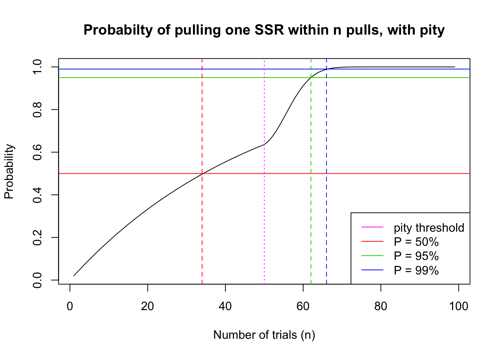
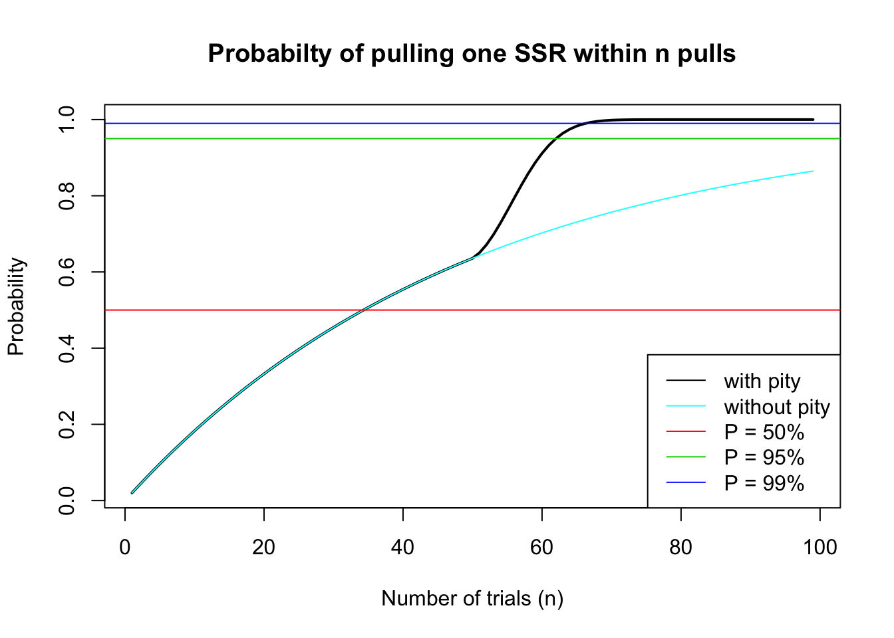

Last updated: 2020-12-20
Checks: 7 0
Knit directory: gacha/
This reproducible R Markdown analysis was created with workflowr (version 1.6.2). The Checks tab describes the reproducibility checks that were applied when the results were created. The Past versions tab lists the development history.
Great! Since the R Markdown file has been committed to the Git repository, you know the exact version of the code that produced these results.
Great job! The global environment was empty. Objects defined in the global environment can affect the analysis in your R Markdown file in unknown ways. For reproduciblity it’s best to always run the code in an empty environment.
The command set.seed(20201216) was run prior to running the code in the R Markdown file. Setting a seed ensures that any results that rely on randomness, e.g. subsampling or permutations, are reproducible.
Great job! Recording the operating system, R version, and package versions is critical for reproducibility.
Nice! There were no cached chunks for this analysis, so you can be confident that you successfully produced the results during this run.
Great job! Using relative paths to the files within your workflowr project makes it easier to run your code on other machines.
Great! You are using Git for version control. Tracking code development and connecting the code version to the results is critical for reproducibility.
The results in this page were generated with repository version abbc19b. See the Past versions tab to see a history of the changes made to the R Markdown and HTML files.
Note that you need to be careful to ensure that all relevant files for the analysis have been committed to Git prior to generating the results (you can use wflow_publish or wflow_git_commit). workflowr only checks the R Markdown file, but you know if there are other scripts or data files that it depends on. Below is the status of the Git repository when the results were generated:
Ignored files:
Ignored: .DS_Store
Ignored: .RData
Ignored: .Rhistory
Ignored: gacha/.RData
Ignored: gacha/.Rhistory
Untracked files:
Untracked: analysis/compare.Rmd
Untracked: analysis/shiny.Rmd
Unstaged changes:
Modified: code/wflow_init.R
Note that any generated files, e.g. HTML, png, CSS, etc., are not included in this status report because it is ok for generated content to have uncommitted changes.
These are the previous versions of the repository in which changes were made to the R Markdown (analysis/pity.Rmd) and HTML (docs/pity.html) files. If you’ve configured a remote Git repository (see ?wflow_git_remote), click on the hyperlinks in the table below to view the files as they were in that past version.
| File | Version | Author | Date | Message |
|---|---|---|---|---|
| html | b206e5c | Lijia Wang | 2020-12-20 | Build site. |
| html | b96a0b2 | Lijia Wang | 2020-12-20 | Build site. |
| Rmd | 1153765 | Lijia Wang | 2020-12-20 | added proof |
| html | eb5cbc6 | Lijia Wang | 2020-12-19 | Build site. |
| Rmd | f70ff64 | Lijia Wang | 2020-12-19 | updated notation |
| html | 1240c6f | Lijia Wang | 2020-12-19 | Build site. |
| Rmd | e847799 | Lijia Wang | 2020-12-19 | unhide code |
| html | 18c709d | Lijia Wang | 2020-12-18 | Build site. |
| Rmd | 37422b1 | Lijia Wang | 2020-12-18 | fixed equations |
| html | af93abd | Lijia Wang | 2020-12-18 | Build site. |
| Rmd | 3a6d876 | Lijia Wang | 2020-12-18 | fixed equations |
| html | 8fbcdf9 | Lijia Wang | 2020-12-18 | Build site. |
| Rmd | 5f646a0 | Lijia Wang | 2020-12-18 | case studies AFTER thesis |
| html | 9f25d18 | Lijia Wang | 2020-12-18 | Build site. |
| Rmd | 4f264ca | Lijia Wang | 2020-12-18 | updated pity |
| html | 27552b6 | Lijia Wang | 2020-12-17 | Build site. |
| Rmd | 1317343 | Lijia Wang | 2020-12-17 | started pity file |
The “pity mechanism” is introduced rather recently as a method to encourage players by guaranteeing them that if they perform enough pulls, they are guaranteed to obtain a card of top rarity. The mechanism is employed in the following way: in the first \(N\) pulls, each pull is an i.i.d. Bernoulli trial with the default probabilities (we shall refer to them as base probabilities). After the N-th pull, in each subsequent pull, the probability of pulling a card of top rarity (SSR) will receive a small increment (\(\delta\)) until you pull a card of top rarity, after which the probability returns to base probabilities and the pull counter resets.
This mechanism is intended to guarantee the players that they can receive an SSR card as long as they make enough pulls. Typically, the player pulls an SSR card before the “pity probability” increases to 100%. We would like to investigate at what point we can actually reach a 95% chance of obtaining an SSR item.
The tricky part about pity mechanism is that pulls (trials, \(X_i\)) are i.i.d. Bernoulli up to a certain point (\(X_N\)), after which the SSR probability increases linearly with the number of trials attempted. Let’s assume the threshold number of pulls before pity mechanism take effect is \(N\). We will divide the probability up into two segments:
A: No SSR cards are pulled on the \(i = 1, 2, \dots, N\) trials before the pity mechanism takes effect. For these \(N\) trials, the probability of pulling an SSR card is \(p\), and the probability of pulling any other card is \(q = 1-p\).
B: For all the subsequent pulls, \(i = N+1, N+2, \dots, k\), with each pull the probability of pulling an SSR increases with increment \(\delta\). This increase in probability is similar the idea of sampling without replacement, and the idea of “probability distribution for draws until first success without replacement” have also been explored before(Ahlgren 2014). However, in the drawing without replacement case, the probability of drawing the next success at the \(n\)-th trial increases in a non-linear fashion. We would like to construct a model such that the probability of success increases linearly.
In the following analysis, we will use the probabilities of SSR cards from Arknights as an example, instead of F/GO or Genshin Impact. The benefit of using Arknights as our example is that 1) they have clear documentation of rate of increase for their pity mechanism, instead of observations and deductions made by players on reddit, and 2) they only have characters in their gacha, and not equipments. Arknights non-event gacha (on banners after the first 10 pulls) is constructed as follows:
The probability of pulling any SSR (6-star Operator): 2%
pity mechanism: If a 6-star Operator was not obtained after 50 pulls, the probability of pulling any 6-star Operator will increase to 4% in the 51st pull. If the 51st pull is still not a 6-star Operator, then the probability of pulling a 6-star Operator will increase to 6% in the 52nd pull, and the probability will keep increasing by 2% until it reaches 100%. This indicates that if the first 98 pulls (after the last 6-star Operator was pulled) did not yield a 6-star Operator, then a 6-star Operator is guaranteed to be drawn on the 99th pull (probability increases to 100%)
Probability in part A depicts the scenario before the pity mechanism has taken effect, so when trial number \(i \leq N\). In this scenario, the probabilty of first successful SSR draw after \(k\) trials is the same as that in single pulls.
Therefore, we can continue to use the Geometric distribution model with \(p=0.02\):
\[ Pr(X=k) = (1-p)^{k-1}p\]
and we have the cumulative distribution function:
\[ Pr(X\leq k) = 1-(1-p)^k \]
And we can easily get the probability of obtaining at least 1 SSR within 50 pulls:
\[ Pr(X\leq 50) = 1-(1-0.02)^{50} = 0.636 \]
This shows that we have more than 60% chance of pulling our first SSR card within 50 pulls, without the aid of the pity mechanism. And the probability of not pulling any SSR cards in those 50 pulls is
\[ Pr(X > 50) = (1-0.02)^{50} = 0.364 \]
If there is no pity mechanism in this gacha, the number of trials to achieve a 95% probability of getting one SSR is about 148 pulls.
\[ Pr(X\leq k) = 1-(1-p)^k = 1-(1-0.02)^k = 0.95\]
\[ k = \frac{log(0.05)}{log(1-0.02)} = 148.28\]
In part B, we focus only on the trials that took place AFTER the pity mechanisms is starting to take an effect. We will write the probability of obtaining the first SSR at each pull as \(S_i\), the probability of obtaining only failure up to this pull as \(F_i\), and the probability of SSR at that specific pull as \(p_i\), and the pity increment as \(\delta\).
Let \(S\) be the number of trials needed to pull 1 SSR card:
Pull #1:
Probablity of first success: \(Pr(X = 1) = p_1 = p + \delta\)
Probablity of failure: \(F_1 = q_1 = 1-p_1 = 1-p_1 = 1-(p+\delta)\)
Pull #2:
Probablity of first success: \(Pr(X = 2) = q_1p_2 = (1-(p+\delta))(p+2\delta)\)
Probablity of failure up to this pull: \(F_2 = q_1q_2 = (1-(p+\delta))(1-(p+2\delta))\)
Pull #3:
Probablity of first success: \(Pr(X = 3) = p_3\Pi_{i=1}^{2}q_i = (1-(p+\delta))(1-(p+2\delta))(p+3\delta)\)
Probablity of failure up to this pull: \(F_3 = \Pi_{i=1}^{3}q_i = (1-(p+\delta))(1-(p+2\delta))(1-(p+3\delta))\)
\[\dots\]
Pull #n:
Probability of first succcess:
\[Pr(X = k) = p_k\Pi_{i=0}^{k-1}q_i = (p+k\delta)\Pi_{i=0}^{k-1}q_i\]
The cumulative probability can be calculated as:
\[Pr(X \leq k) = 1-\Pi_{i=1}^{k}q_i\]
We will temporarily refer to this distribution as the pity distribution.
At a first glance, it seems that it is difficult to find an analytical solution for this problem, but we can still visualize the results and graph the cumulative probability function. Note that at the 99th pull, the probability of pulling an SSR card increases to 100%, after which the gacha resets to base probabilities. The proof will be writen in the appendix below.
# Arknights parameters
base.p = 0.02
incr = 0.02
N = 50 # pulls before pity starts
pi = c(rep(base.p, N-1), seq(base.p, to = 1, by = incr))
i = length(pi)
fi = rep(1-base.p, i)
for(ind in 2:i){
fi[ind] = (1-pi[ind])*fi[ind-1]
}
plot(seq(1,i), 1 - fi, type = 'l',
main = "Probabilty of pulling one SSR within n pulls, with pity",
xlab = "Number of trials (n)", ylab = "Probability")
abline(h = 0.50, col = 2)
abline(h = 0.95, col = 3)
abline(h = 0.99, col = 4)
p50 = which.min(abs((1-fi)-0.5))
p95 = which.min(abs((1-fi)-0.95))
p99 = which.min(abs((1-fi)-0.99))
abline(v = p50, col = 2, lty = 2)
abline(v = p95, col = 3, lty = 2)
abline(v = p99, col = 4, lty = 2)
abline(v = N, col = 6, lty = 3)
legend('bottomright', legend=c('pity threshold', 'P = 50%', 'P = 95%', 'P = 99%'),
col = c(6, 2, 3, 4), lty = 1)
| Version | Author | Date |
|---|---|---|
| 8fbcdf9 | Lijia Wang | 2020-12-18 |
(paste("Player has 50% probability to pull their first SSR within", p50, "pulls."))[1] "Player has 50% probability to pull their first SSR within 34 pulls."(paste("Player has 95% probability to pull their first SSR within", p95, "pulls."))[1] "Player has 95% probability to pull their first SSR within 62 pulls."(paste("Player has 99% probability to pull their first SSR within", p99, "pulls."))[1] "Player has 99% probability to pull their first SSR within 66 pulls."We can see that a 95% probability of one SSR at 62 pulls is a significant improvement from the 148 pulls we estimated if there is no pity mechanism in this gacha.
# Arknights parameters
base.p = 0.02
incr = 0.02
N = 50 # pulls before pity starts
pi = c(rep(base.p, N-1), seq(base.p, to = 1, by = incr))
i = length(pi)
pn = c(rep(base.p, i))
fi = rep(1-base.p, i)
fn = rep(1-base.p, i)
for(ind in 2:i){
fi[ind] = (1-pi[ind])*fi[ind-1]
fn[ind] = (1-pn[ind])*fn[ind-1]
}
plot(seq(1,i), 1 - fi, type = 'l',
main = "Probabilty of pulling one SSR within n pulls",
xlab = "Number of trials (n)", ylab = "Probability",
lwd = 2)
lines(seq(1,i), 1- fn, col = 5)
abline(h = 0.50, col = 2)
abline(h = 0.95, col = 3)
abline(h = 0.99, col = 4)
p50 = which.min(abs((1-fi)-0.5))
p95 = which.min(abs((1-fi)-0.95))
p99 = which.min(abs((1-fi)-0.99))
legend('bottomright', legend=c('with pity', 'without pity', 'P = 50%',
'P = 95%', 'P = 99%'),
col = c(1, 5, 2, 3, 4), lty = 1)
| Version | Author | Date |
|---|---|---|
| 8fbcdf9 | Lijia Wang | 2020-12-18 |
Results demonstrate once again that without the pity mechanism, players will not be able to reach 95% probability of pulling an SSR card within 99 pulls.
First, we would like to show that pity distribution is a proper probability distribution. This indicates that the probability density function (pdf) \(f(x)\) must satisfy two conditions:
\(f(x) \geq 0\) for all \(x\)
\(\int_{-\infty}^{\infty}f(x)dx = 1\)
Proof 1 :
From our discription of pity distribution above, we have
Probability of first succcess in k trials (pdf) is:
\[Pr(X = k) = f(X) = p_k\Pi_{i=0}^{k-1}q_i = (p+k\delta)\Pi_{i=0}^{k-1}q_i\]
Since \(p\geq 0\), \(q\geq 0\), \(\delta \geq 0\), \(Pr(X=k) \geq 0\) must hold for all \(k\). Therefore condition 1 is satisfied.
Proof 2 :
Assuming our cumulative distribution function derivation is correct (detailed proof in appendix B):
\[Pr(X \leq k) = \Sigma_{i=1}^{k} Pr(X=i) = 1-\Pi_{i=1}^{k}q_i\]
It is easy to see that when \(k \to \infty\),
\[ \Pi_{i=1}^{k}q_i = \Pi_{i=1}^{\infty}q_i \to 0\]
Therefore as \(k \to \infty\),
\[Pr(X \leq k) = \int_{-\infty}^{\infty}f(x)dx \to 1\]
so condition 2 is also satisfied.
We have stated previously that cumulative probability can be calculated as:
\[Pr(X \leq k) = \Sigma_{i=1}^{k} Pr(X=i) = 1-\Pi_{i=1}^{k}q_i\]
Where:
Probability of first succcess:
\[Pr(X = k) = p_k\Pi_{i=1}^{k-1}q_i = (p+k\delta)\Pi_{i=0}^{k-1}q_i\]
and
\[Pr(X \leq k) = 1-\Pi_{i=1}^{k}q_i\]
We want to show that when \(k\geq1\):
\[g(k) = \Sigma_{i=1}^{k} [p_i\Pi_{i=0}^{k-1}q_i] = 1-\Pi_{i=1}^{k}q_i \] where \(p_i= p+i\delta\), \(q_i = 1-p_i\), and \(q_0 = 1\).
We can use proof by induction.
Base case: We want to show that equation holds for the smallest positive integer \(k=1\)
when \(k = 1\):
\[LHS = p_1 q_0 = p_i*1 = p_i\]
\[RHS = 1-q_i = p_i = LHS\]
Equation holds for the base case.
Inductive step: for any \(n\geq1\), if \(g(n)\) holds, then \(g(n+1)\) also holds.
If equation holds for \(n\), then we have:
\[ \Sigma_{i=1}^{n} [p_i\Pi_{i=0}^{n-1}q_i] = 1-\Pi_{i=1}^{n}q_i \]
It follows that:
\[ \Sigma_{i=1}^{n+1} [p_i\Pi_{i=0}^{n}q_i] = \Sigma_{i=1}^{n} [p_i\Pi_{i=0}^{n-1}q_i] + p_{n+1}\Pi_{i=0}^{n}q_i= 1-\Pi_{i=1}^{n}q_i + p_{n+1}\Pi_{i=0}^{n}q_i\]
RHS can be simplified as:
\[1-\Pi_{i=1}^{n}q_i + p_{n+1}\Pi_{i=0}^{n}q_i = 1-\Pi_{i=1}^{n}q_i(1-p_{n+1}) = 1-\Pi_{i=1}^{n}q_iq_{n+1} = 1-\Pi_{i=1}^{n+1}q_i\]
\[ g(n+1) = \Sigma_{i=1}^{n+1} [p_i\Pi_{i=0}^{n}q_i] = 1-\Pi_{i=1}^{n+1}q_i\]
Therefore, statment \(g(n+1)\) also holds true, establishing the inductive step. We can thus conclude that \(g(k)\) holds for all interger values \(k\geq1\).
Ahlgren, John. 2014. “The Probability Distribution for Draws Until First Success Without Replacement.” arXiv Preprint arXiv:1404.1161.
sessionInfo()R version 3.6.2 (2019-12-12)
Platform: x86_64-apple-darwin15.6.0 (64-bit)
Running under: macOS 10.16
Matrix products: default
BLAS: /Library/Frameworks/R.framework/Versions/3.6/Resources/lib/libRblas.0.dylib
LAPACK: /Library/Frameworks/R.framework/Versions/3.6/Resources/lib/libRlapack.dylib
locale:
[1] en_US.UTF-8/en_US.UTF-8/en_US.UTF-8/C/en_US.UTF-8/en_US.UTF-8
attached base packages:
[1] stats graphics grDevices utils datasets methods base
other attached packages:
[1] workflowr_1.6.2
loaded via a namespace (and not attached):
[1] Rcpp_1.0.3 rprojroot_1.3-2 digest_0.6.25 later_1.0.0
[5] R6_2.4.1 backports_1.1.5 git2r_0.26.1 magrittr_1.5
[9] evaluate_0.14 stringi_1.4.6 rlang_0.4.5 fs_1.3.2
[13] promises_1.1.0 whisker_0.4 rmarkdown_2.1 tools_3.6.2
[17] stringr_1.4.0 glue_1.3.2 httpuv_1.5.2 xfun_0.12
[21] yaml_2.2.1 compiler_3.6.2 htmltools_0.4.0 knitr_1.28